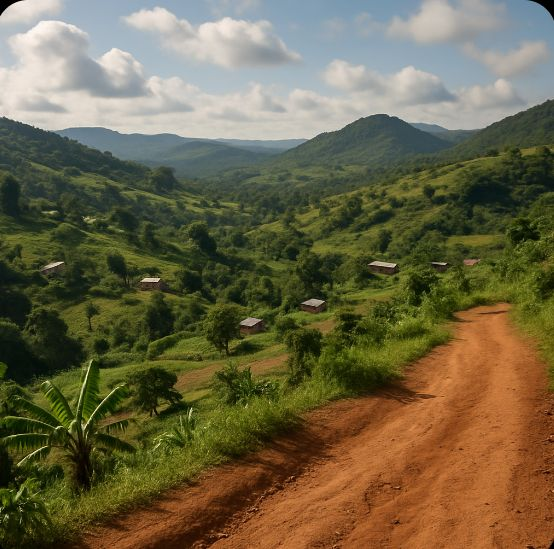

Not just the best in the BAMENDA.
The best in the CAMEROON.

Relief of Befang Hilly and Undulating Terrain: Befang is located in a hilly landscape,part of the Cameroon highlands. the terrain is mostly undulating, with a mix of low hills
and narrow valleys making it scenic but sometimes challenging for transportation and farming. Moderate Elevation: The
village lies at a moderate elevation, likely between 800 to 1200 meters above sea level. this elevation
contributes to a mild tropical climate, cooler than the lowland areas
Water Features: several streams and small rivers run through or near Befang, contributing to its fertile
valleys. These water
bodies are important for both farming and daily life.
Soil and Vegetation: the relief supports rich volcanic soils, especially in the valleys, which are suitable
for agriculture. the
slopes are often covered with forest or bush vegetation, though deforestation
for farming is common.